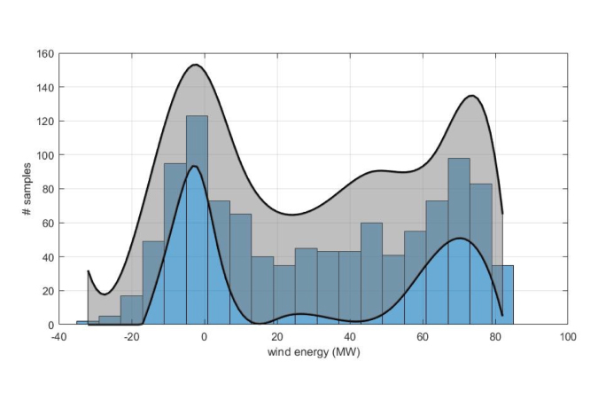

Online combinatorial optimization for Interconnected refrigeration systems: linear approximation and submodularity
Online combinatorial optimization for Interconnected refrigeration systems: linear approximation and submodularity. Insoon Yang. Proceedings of the 20th IFAC World Congress, pp. 7389-7396, 2017.
Distributionally robust stochastic control with conic confidence sets
Distributionally robust stochastic control with conic confidence sets. Insoon Yang. Proceedings of the 56th IEEE Conference on Decision and Control (CDC), pp. 4291-4296, 2017.
Data-driven distributionally robust control of energy storage to manage wind power fluctuations
Data-driven distributionally robust control of energy storage to manage wind power fluctuations. Samantha Samuelson, and Insoon Yang. Proceedings of the 1st IEEE Conference on Control Technology and Applications (CCTA), pp. 199-204, 2017.

Automatica: A Dynamic Game Approach to Distributionally Robust Safety Specifications
The paper “ A dynamic game approach to distributionally robust safety specification for stochastic systems ”, authored by Insoon Yang, has been published in Automatica . It provides a novel way to compute the probability of ...
Korea-Germany Intelligent Manufacturing Systems Laboratory (NRF)
Our proposal “Korea-German Intelligent Manufacturing Systems Laboratory” gets funded by NRF (Lead PI: Prof. Sung-Hoon Ahn, Co-PIs: Profs. Chong Nam Chu, Byung Dong Yoon, Insoon Yang, Christian Brecher). This Basic Research Lab will conduct research in ...